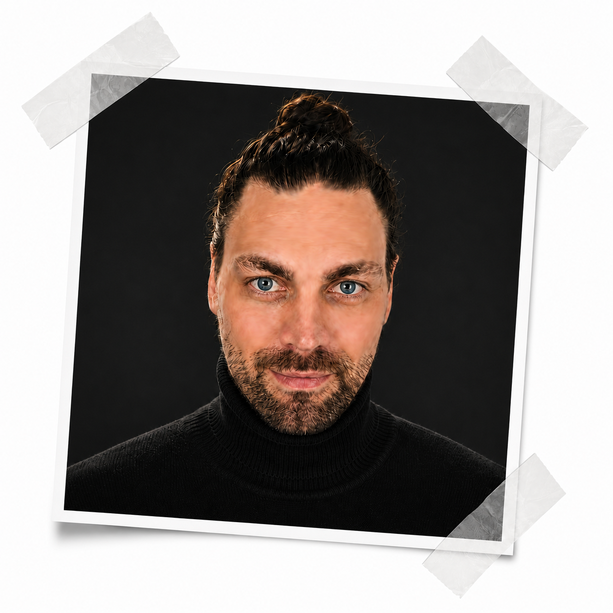

Schnitt seit 2010 — von brachialen Counter-Strike-Montagen bis zu High-End Werbespots und 2D-Animationen. Ich baue knallhartes Tempo, präzises Timing und cineastisches Storytelling in jeden Frame.

Konstante Weiterentwicklung im Videoschnitt – von den ersten Community-Montagen bis zur professionellen Markeninszenierung.
Erste Schritte im Videoschnitt: Counter-Strike-Highlights, Sounddesign und präziser Takt-Schnitt.
Kommerzielle Werbe-Clips für natürlichpflanzlich.de – visuelle Markenführung trifft auf conversion-starke Cuts.
High-End Post-Production, Motion Graphics, 2D-Comic-Animationen und moderne Short-Form Edits.
Zieh den Regler: Links das rohe, unbearbeitete Ausgangsmaterial, rechts das fertig kolorierte und dynamisch geschnittene Endergebnis.
Tipp: Schiebe den Regler hin und her, um die Transformation live zu erleben.
Eine Auswahl an High-Impact Edits, Gaming-Highlights und Commercials.
Präziser Beat-Sync, nahtlose Übergänge und aggressives Tempoverhalten.
Clean strukturierte Produktinszenierung mit cineastischem Look & Feel.
Dynamische Vertikal-Animationen mit maßgeschneiderten FX.
Professionelles Equipment für maximale Effizienz im täglichen Workflow.